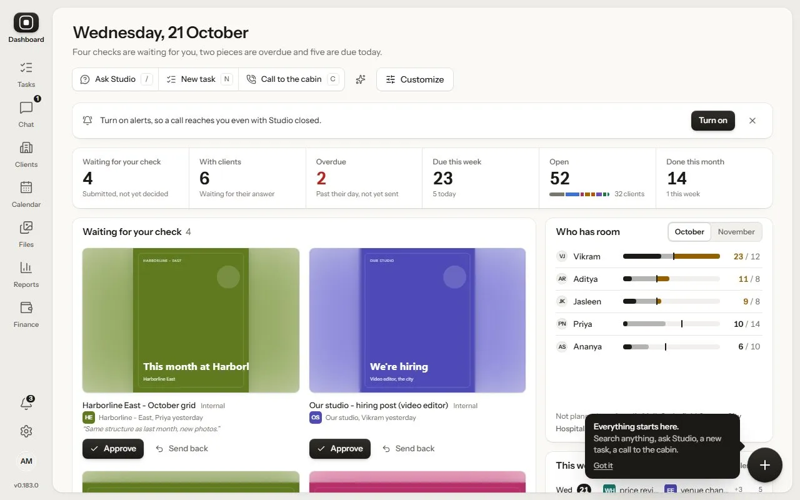
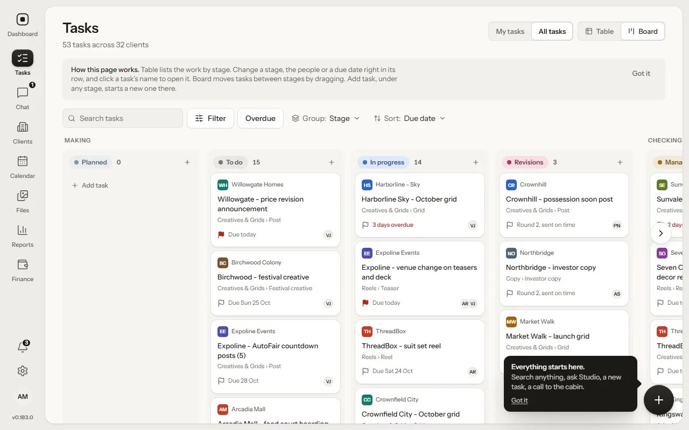
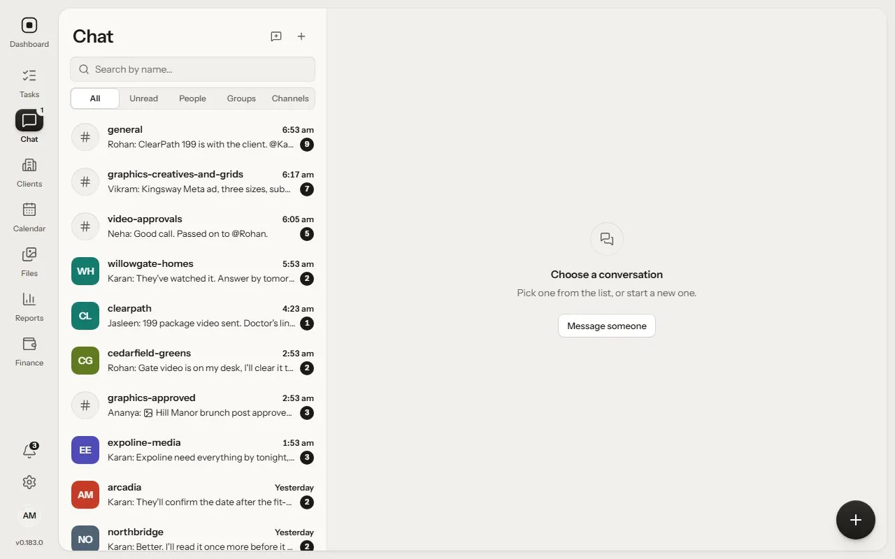
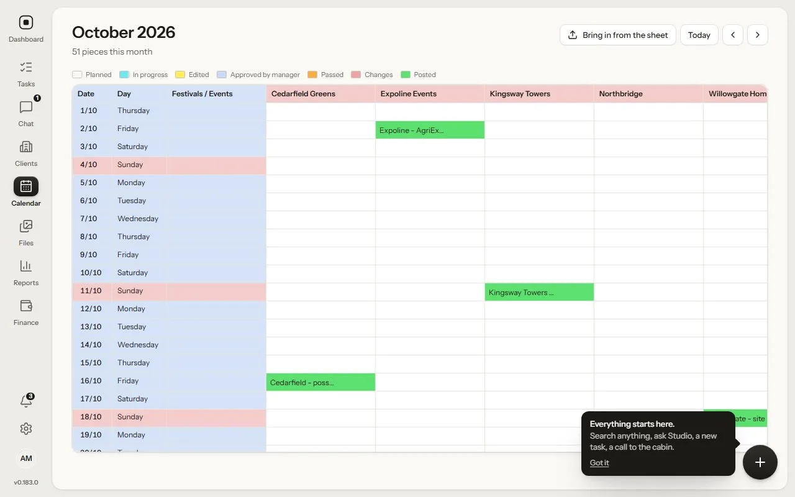
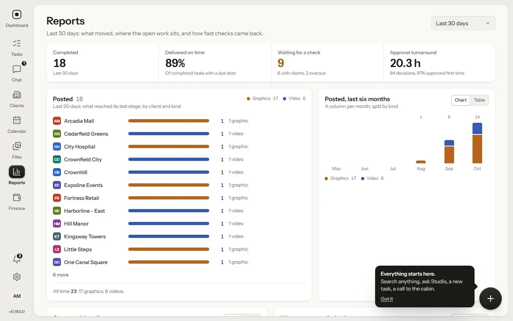
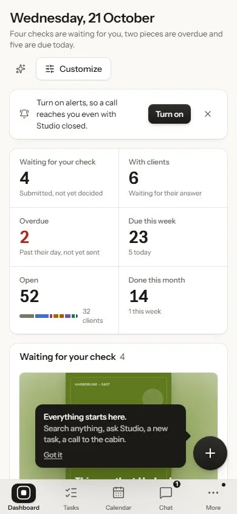

Board
Chat
Calendar
Reports

Studio
The work tool Dev's Marketing Mind runs on. It began as a ClickUp-style build and grew into its own product.
- Inside
- Clients, tasks, approvals with links clients can open, chat, calendar, reports and files
- Runs on
- The web, Windows and Android
- Built with
- Next.js, tRPC, Prisma and Electron